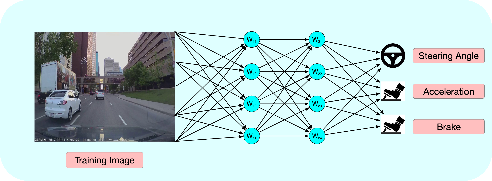
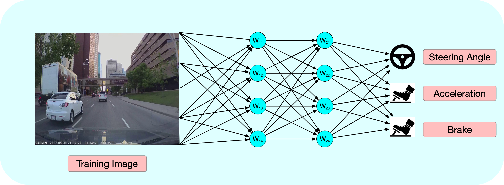

The Mahindra Driverless challenge is an initative by the Mahindra Rise group with the vision to make autonomous driving technology possible in Indian road conditions. Team Pragyan, which I lead represents the robotics and automation department from PSG Tech. I am proud to say that we one of the only twelve teams selected across the country among 512 colleges and the only team so far to incorporate deep learning for control.Mahindra, being an automotive company has been gracious enough to provide one of their e20 electric car models equipped with CAN communication systems for for steering/throttle/brake control as well as receiving relevant information. All that was left was for us to make it autonomous. Well ,easier said than done.

Conventional controllers such as PID and SLAM architectures were implemented and tested in a ROS based simulated environment and then transferred to the actual car. Although they worked perfectly well ic controlled environments, we realized pretty soon that completely hardcoded probabilistic algorithms could never be transferred to actual dynamic road conditions.
Unlike probabilistic algorithms wherein everything is manually hanfcrafted, neural netwoks have the ability to select which features from the input data re more important as well as write it’s own algorithms for the task at hand. See my post on deep learning for more information.We are using a partcular imitation learning algorithm called behavioral cloning ,which simply tries to imitate a set of trajectories collected when was driving the car. See my post on imitation learning for further details.
Paragraph
 
